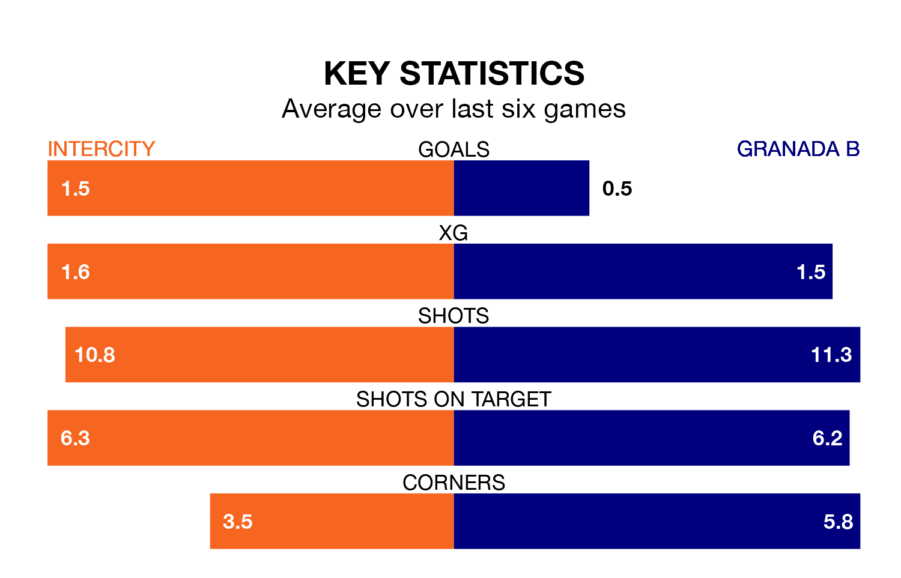

Intercity are heavy favourites to keep all three points at home in Sunday's late kick-off against Granada B.
Intercity, who sit eighth in Primera Division RFEF Group 2 with 19 games played, are priced at 1.5 to seal victory.
Sitting 12 places and 18 points behind them in the table, Granada B are 6.3 to win with *Betting Company*, while the draw is at 3.2.
Intercity are in disappointing form in Primera Division RFEF Group 2, with one win and three draws from their last six games.
With no wins and a draw over that period, Granada B's form is worse – they have taken one point from 18, compared to the hosts' six.
With 11 goals in 19 games so far this season, the away side are the league's second-lowest scorers with 0.6 goals per game. And they are conceding more than average, letting in 31 goals at a rate of 1.6 per game.
Intercity, meanwhile, are average scorers, with 1.2 goals per game. They have conceded 1.1 goals per game.
In the last three years, Intercity and Granada B have played each other on three occasions. They won one each, and they drew once.
Their last meeting was on September 23, when Granada B won 1-0 at home.
Intercity's last match was on January 13, a 1-0 loss against Córdoba.
Granada B lost 1-0 against Mérida AD last time out, on January 14.
Updated: 06:13 (UTC), 18/01/24